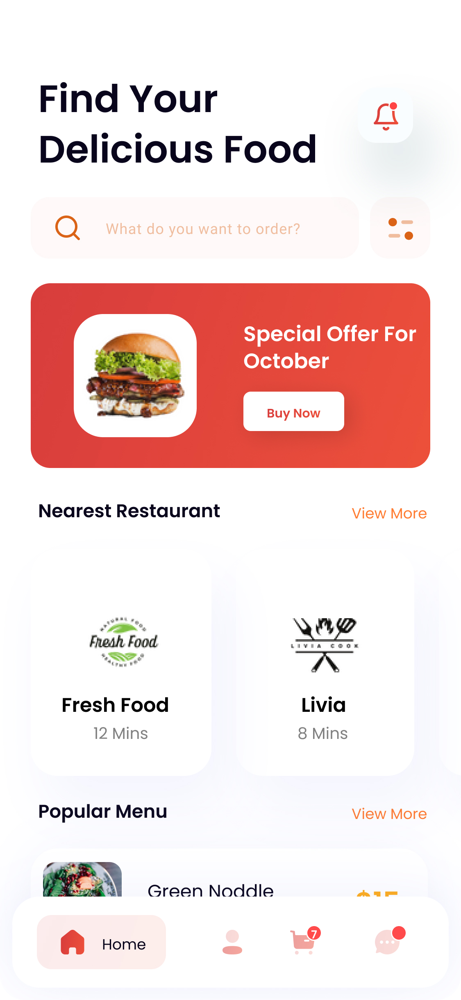
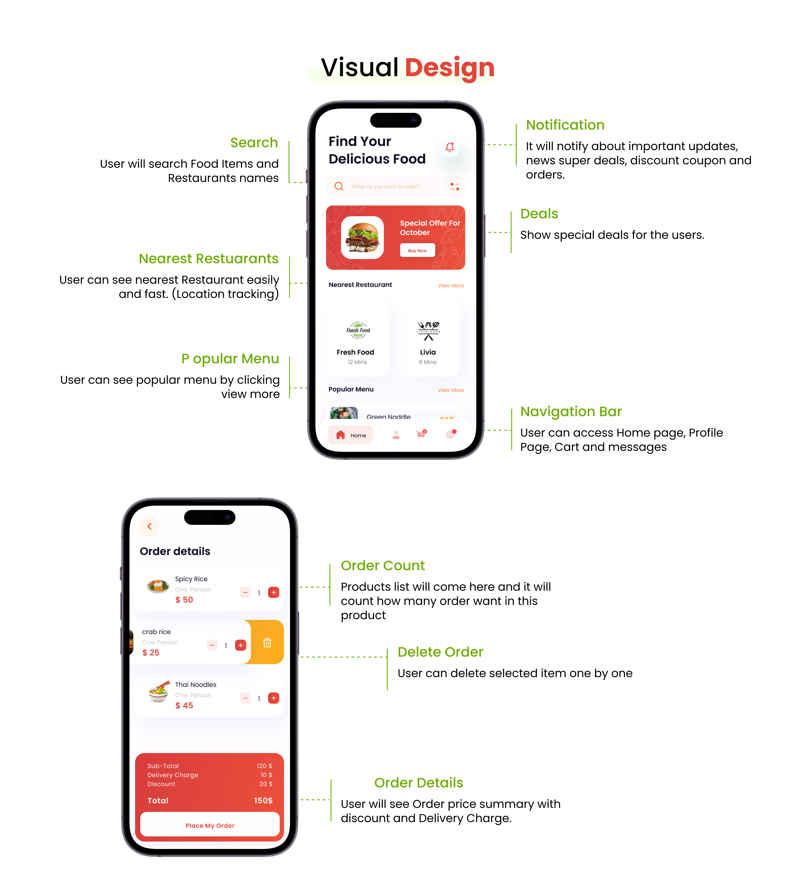
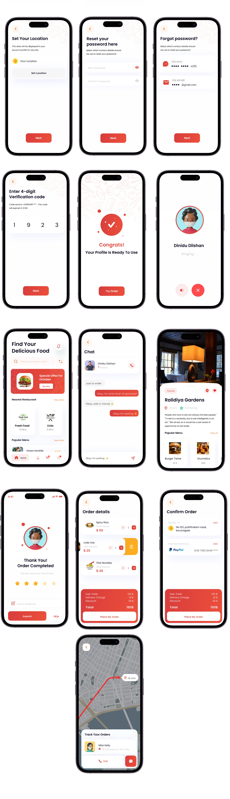

Choice overload
Competing options and unclear hierarchy make it harder to find a meal quickly.
Designing a smoother way to discover restaurants, customise a meal and place an order — bringing the whole journey together in one thoughtful mobile experience.

Food Cafe is a mobile food ordering concept created for a Canadian client in 2024. The brief was to make the journey from finding a meal to confirming an order feel simple, clear and enjoyable.
The work brought together discovery, user-flow planning, interface design and a reusable design system. The focus was not simply to make screens look appealing, but to make the important decisions feel easier at every step.
The design opportunity
Help people spend less time figuring out the app and more time choosing what they actually want to eat.
Find a satisfying meal quickly during a packed workday.
Browse affordable options without getting lost in too many choices.
Customise orders and understand the total before checking out.
The project focused on three friction points in common food-ordering journeys: finding the right item, making custom choices and feeling confident at checkout.
Competing options and unclear hierarchy make it harder to find a meal quickly.
Dense option screens can interrupt the flow and make customisation feel complicated.
When totals and next steps are difficult to scan, users can lose confidence before paying.
The discovery phase included a competitor review and user interviews to understand how people browse, customise and complete food orders. The findings informed the information architecture and the core browse, order and track journeys.
People want to reach a relevant meal in just a few taps. Make discovery feel immediate.
Show customisation choices progressively instead of presenting every option at once.
Keep checkout predictable, with order details and totals easy to review.
Recommendations should support discovery without competing with the user's goal.
Make order status easy to find so people are not left wondering what happens next.
A focused four-part process helped turn research findings into a clear, testable product experience.
Reviewed competitor experiences and interviewed users to identify patterns, needs and friction points.
Organised the information architecture and mapped the browse, order and tracking journeys.
Created wireframes, established reusable UI components and developed high-fidelity screens in Figma.
Used interactive prototypes and usability feedback to refine the checkout and item-customisation flows.
The interface was shaped around a simple sequence: discover something appealing, make it yours, then place the order with confidence.
Prominent search, clear categories, nearby restaurants and popular menu items help people get started quickly.
Present item details and customisation in a more focused way, so each decision feels clear.
Bring selected items, quantities, delivery charges and totals together for an easier final review.



The design system brings the experience together through reusable components and shared visual rules. Colour, typography, spacing, elevation and interaction states help maintain consistency as new screens and features are added.
A component-led foundation for a coherent experience across the app — from the first search to the final order confirmation.
The project brought the core ordering experience into a more connected flow, with clearer discovery, more focused customisation and a checkout that makes order details easier to review.
Note: These figures are retained from the original project content. Before publishing, ensure the underlying test records and measurement method are available to substantiate them.
Smarter recommendations, favourites and one-tap reordering.
Rewards and tailored offers that encourage repeat orders.
Live courier tracking, reviews and richer order updates.
What I took away
A strong ordering experience is not about adding more features. It is about helping people make the next decision with less effort — and keeping that clarity consistent from screen to screen.